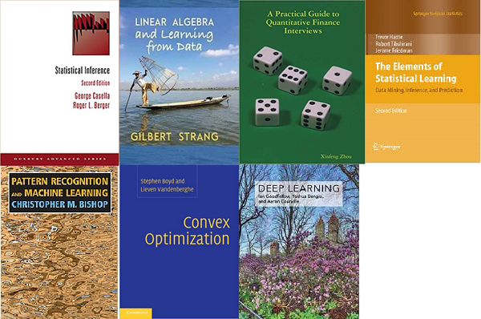

Being a researcher to work on A.I (apologize for using the buzz word), apart from coding skills,
one really gotta have to be equipped with a solid background in math and stats.
Nobody, maybe except for senior PhDs in math or stats major can claim that
they know everything, but at least we need those basic intuitions to understand how an algorithm
works, or where the theoretical guarantee comes from.
Here are the 7 books I have read.
- Cassella Book is a must, where you know your bounds, distribution, and where RV comes from.
- Strang's Linear Algebra doesn't need much of my own explanation
- This "Green book" is really a good pointer to all the basics.
- Bishop book is the bible of ML.
- Boyd book is probably the most practical book out there about optimization. Rockfella one is too
hard for me.
- Statistical Learning book is also very famously fundamental.
- Goodfellow book is new, but not necessarily the best written one.
From my experience, we would need the following background at least to understand what's going on:
Linear Algebra
and its
Essence
Probability
Statistics
Calculus (Of course)
As a result, before I go on the job market, there's tons of work for me to keep my memory fresh.
Common Families of Distributions
Normal (Gaussian)
$X\sim N(\mu,\sigma^2)$ if
$$
p(x) = \frac{1}{\sigma\sqrt{2\pi}}e^{-(x-\mu)^2/(2\sigma^2)}.
$$
If $X \in \mathbb{R}^d$ then
$X\sim N(\mu,\Sigma)$ if
$$
p(x) = \frac{1}{ (2\pi)^{d/2} |\Sigma|} \exp\left( - \frac{1}{2} (x-\mu)^T \Sigma^{-1}
(x-\mu)\right).
$$
Then
$\mathbb{E}(Y) = \mu$ and
${\sf cov}(Y) = \Sigma$.
The moment generating function is
$$
M(t) = \exp\left( \mu^T t + \frac{t^T \Sigma t}{2}\right).
$$
Chi-squared
$X\sim \chi^2_p$ if
$X = \sum_{j=1}^p Z_j^2$
where
$Z_1,\ldots, Z_p\sim N(0,1)$.
Non-central chi-square.$X \sim \chi^2_1(\mu^2)$ if $X = Z^2$ where $Z \sim N(\mu,1)$.
Bernoulli.
$X\sim {\rm Bernoulli}(\theta)$ if
$\mathbb{P}(X=1)=\theta$ and
$\mathbb{P}(X=0)=1-\theta$ and hence
$$
p(x)= \theta^x (1-\theta)^{1-x}\ \ \ \ \ \ x=0,1.
$$
Binomial.
$X\sim {\rm Binomial}(\theta)$ if
$$
p(x)=\mathbb{P}(X=x) = \binom{n}{x} \theta^x (1-\theta)^{n-x}
\ \ \ \ \ \ x\in\{-1,\ldots, n\}.
$$
Poisson
$X\sim {\rm Poisson}(\lambda)$ if
$P(X=x) = \frac{e^{-\lambda}\lambda^x}{x!}$ $x=0,1,2,\ldots$.
The
$\mathbb{E}\left(X\right) = {\sf Var}\left(X\right) = \lambda$
and
$M_X(t) = e^{\lambda({e^t}-1)}$.
We can use
the mgf to show: if $X_1 \sim {\rm Poisson}(\lambda_1)$, $X_2 \sim {\rm Poisson}(\lambda_2)$,
independent then
$Y=X_1 + X_2 \sim {\rm Poisson} (\lambda_1 + \lambda_2)$.
Exponential
$X\sim {\rm exp}(\beta)$ if
$p_X(x) = \frac{1}{\beta} e^{-x/\beta}$, $x>0$.
Note that ${\rm exp}(\beta)=\Gamma(1,\beta)$.
Multinomial
The multivariate version of a Binomial is called a Multinomial. Consider
drawing a ball from an urn with has balls with $k$ different colors
labeled ``color 1, color 2, $\ldots$, color $k$.'' Let $p=(p_1,p_2,\ldots,p_k)$
where $\sum_j p_j =1$ and $p_j$ is the probability of drawing color $j$. Draw
$n$ balls from the urn
(independently and with replacement) and let $X=(X_1,X_2,\ldots,X_k)$ be
the count of the number of balls of each color drawn. We say that $X$ has
a Multinomial $(n,p)$ distribution. The pdf is
$$
p(x) = {n \choose {x_1,\ldots,x_k}} p_1^{x_1}\ldots p_k^{x_k}.
$$
Gamma
$X \sim \Gamma(\alpha,\beta)$ if
$$
p_X(x) = \frac 1{\Gamma(\alpha) \beta^\alpha} x^{\alpha-1} e^{-x/\beta}
$$
for $x>0$
where
$\Gamma(\alpha) = \int_0^\infty \frac 1{\beta^\alpha} x^{\alpha-1} e^{-x/\beta} dx$.